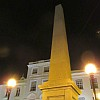

|
 |
 |
I' fait niet quand i' n'fait pon jeu. Ch'est en tchi not' Tèrre touônne et la maîntchi du temps not' pétite taque dé tèrre fache lé solé, mais coumme jé boulons dans l'espace, jé touônnons la carre ou j'pâssons par la sîl'ye et nos v'là à fachi l'aut' bord opposé au solé à r'garder l'unnivèrs êtailé (s'i' n'y'a pon d'nouages ou bein si jé d'meuthons à la campangne où'est qu'i' n'y'a pon tant d'veues êlectriques à nos êgaluer et empêchi d'vaie les constellâtions et tout chenna).
Ch'est l'Solé tchi fait l'jour, mais j'viyons la Leune la niet (sénon quand j'viyons la Leune dé pliein jour ou quand la niet y'a pesta d'leune). Ch'n'est pon la Leune tchi fait la niet, mais ch'est vrai qu'la Leune est un sŷmbole d'la niet - et dans les touos vièrs temps nou criyait qu'la déêsse d'la Leune gouvèrnait la niet.
Nou dort la niet (sénon qu'nou-s'a l'însonmnie ou s'nou travâle la niet) mais y'a d's annimaux tchi sont rêvilyis la niet et tchi dorment duthant la journée. Des caûques-souothis par exempl'ye sont des p'tites bêtes tchi voltil'yent dans la nièrcheu - i' n'ont pon qu'faithe dé vaie car i' trouvent lus c'mîn et happent lus mangi par lus piâl'lie ultrasonnique et l's échos qu'il' en ouaient atout lus grandes ouothelles.
Les cheins tchi travâlent la niet font eune niétchie d'travas et les cheins tchi n'travâlent pon peuvent lus rêjoui d'eune bouonne niétchie d'dormi. Mais s'lon la saîson la niet peut êt' allouongnie ou raccourchie - ch'est qu'la Tèrre est cantée coumme ou cirtchule lé Solé - et en Hivé ch'est qué j'pouvons acouo êt' en travas quand la niet nos tchait sus l'co épis j'éthons à nos dêtâner du liet quand i' fait acouo niet.
Lé temps pâssé quand n'y'avait pon d'êléctricité pouor des veues d'rues et pouor êcliaithi les maîsons, et même d'vant lé gaz qué nou faîthait sèrvi pouor êcliaithi, nou-s'avait peux d'la nièrcheu et nou criyait qu'la niet 'tait remplyie d'monstres et d'chorchièrs. Lé bélengi soulait m'ner les gens hors du c'mîn à seule fîn d'les êdgéther et faithe ma, et l'balle-à-leunettes êpeûthait les mousses, et l'ouéthou 'tait par les c'mîns et toutes les manniéthes dé néthes criatuthes, épis les p'tits faîtchieux étout.
S'nou n'viyait pon ches monstres par les c'mîns, nou les viyait duthant san dormi - la pons'rêsse. Mais y'a des bieaux rêves étout tchi veinnent duthant la niet.
|
|
dans l'mitan d'la niet |
|
|
Dé niet touos les cats sont gris |
Viyiz étout: